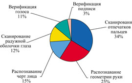
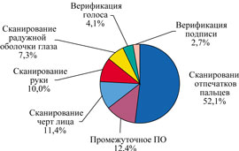

Александр Евангели
Биометрические устройства аутентификации существуют более двух десятков лет. За это время они из шпионских фильмов переместились во вполне обыденные жизненные ситуации и существенно подешевели: сегодня на рынке предлагается множество разнообразных систем биоидентификации стоимостью от нескольких десятков долларов до нескольких миллионов. С их помощью можно защитить и отдельно стоящий ПК, и большую корпоративную сеть.
Отметим, что к повсеместному внедрению этих систем готовится компания Microsoft, объявившая о планах встраивания в Windows механизмов защиты на основе биометрических технологий: персональный компьютер будет узнавать своего хозяина по отпечаткам пальцев, голосу или радужной оболочке глаза.
Но в биометрических методах нуждаются не только компьютерные пользователи. Для таких сфер применения, как пограничный контроль, обслуживание и регистрация пассажиров, работа с электронными идентификационными документами и картами, предупреждение и раннее раскрытие преступлений, вопросы безопасности в высшей степени приоритетны, и в их решении существенную помощь могут оказать автоматизированные системы, основанные на биометрических методах.
Как это работает
Биоидентификация основана на уникальности характеристик человеческого тела - не существует двух людей с одинаковыми биометрическими признаками. Биометрия (biometrics) - это прикладная область знаний, использующая при создании различных автоматических систем разграничения доступа уникальные признаки человека, называемые биометрическими характеристиками (biometric parameters). К таковым относятся:
- папиллярный узор пальца;
- форма кисти руки;
- узор радужной оболочки глаза;
- параметры голоса;
- черты лица;
- термограмма лица (схема кровеносных сосудов);
- форма и способ подписи;
- фрагменты генетического кода и т. д.
Следует различать биометрическую характеристику и биометрический образец (biometric sample) - конкретное "значение" (наблюдение) выбранной биометрической характеристики.
Большинство биометрических систем функционирует следующим образом: в базе данных системы безопасности хранится цифровой образ отпечатка пальца, радужной оболочки глаза или голоса. Человек, желающий получить доступ к системе, с помощью микрофона, сканера отпечатков пальцев или других устройств вводит в систему свой биометрический образец. Система извлекает из этой информации (образца) биометрические данные (особые точки и их параметры), сравнивает их с подобными, хранящимися в базе данных, определяет степень совпадения и делает заключение о том, удалось ли идентифицировать конкретного человека по предъявленным данным, или подтверждает, что он именно тот, за кого себя выдает.
Рынок средств биометрии
Биометрический рынок, в отличие от биометрических технологий, довольно молод, и критическим фактором роста для него стали события 11 сентября. Быстрое "возмужание" этого рынка в очень большой степени связано с глобальными переменами в общественном самочувствии.
По возобновлении торгов на Нью-Йоркской бирже 17 сентября 2001 г. стали бурно расти акции высокотехнологичных компаний, предлагающих средства безопасности. Среди компаний с рыночной стоимостью более 5 млрд долл. в лидеры вышла Symantec: уже за полгода после печальных событий стоимость акций этой компании более чем удвоилась. Резко выросли акции компаний, специализирующихся на хранении данных (Network Appliance и Veritas Software). Этот вид бизнеса стал актуален после потери огромного банка данных во Всемирном торговом центре в результате теракта. Но самый большой процентный рост показали компании с низкой рыночной стоимостью. Так, акции Invision Technologies, занимающейся производством детекторов для определения бомб, взлетели на 1271%. Большинство лидеров роста стали таковыми именно в результате событий 11 сентября.
Рынок биометрии тоже в значительной степени "сделан" одиннадцатым сентября. И хотя тенденции к его росту обозначились еще за год до этого, теракты радикально изменили технологические приоритеты. До них среди граждан США всего 10% поддерживали идею биометрической паспортизации, зато после - более 75%. Отслеживание потенциально опасных личностей стало первостепенной задачей. Расслабившемуся миру напомнили о его уязвимости, и биометрия получила шанс стать одной из самых быстроразвивающихся отраслей.
Сегодня, когда дактилоскопический паспорт становится реальностью, мнение граждан по этому поводу представляет лишь теоретический интерес, однако рынок систем гражданской идентификации остается одним из самых динамичных. В ближайшие годы будет значительно расти и рынок систем для правительственных организаций.
Мировой рынок биометрии сегодня представлен десятками известных фирм, а всего на нем работает более 300 компаний, занимающихся продажей, разработкой, обслуживанием биометрических систем. Компания IDC в течение двух лет, с 2000 по 2001 г., тщательно изучала этот рынок с целью выявить его тенденции и реальные изменения, опубликовав в октябре 2002 г. отчет Worldwide Hardware and Biometrics Authentication Forecast and Analysis, 2001-2006.
Структура рынка в зависимости от используемых для идентификации признаках в 2002 г. показана на рис. 1. Более свежая, нынешнего года, аналитика International Biometric Group приведена на рис. 2. В этом распределении не учитываются AFIS- и криминалистические системы, представляющие собой особый сегмент рынка.
|  |  |
| Рис. 1. Структура рынка биометрических средств по используемым для идентификации признакам в 2002 г.
|
Рис. 2. Структура рынка биометрии по технологиям (за исключением систем AFIS). Источник: International Biometric Group, 2002.
|
По прогнозам IDC, рынок биометрических технологий за пять лет должен вырасти с 58,4 млн долл. в 1999 г. до 1,8 млрд долл. к 2004 г. По другим оценкам, объем этого рынка в 2003 г. превысил 1 млрд долл., а прогноз на 2005 г. дает сумму свыше 5 млрд долл. Почти 50% биометрических систем приходятся на долю дактилоскопии. Прогноз динамики данного рынка от International Biometric Group (рис. 3) представляется наиболее реалистичным.
| Рис. 3. Прогноз динамики рынка биометрических средств на ближайшие годы (суммарный объем, млрд долл.). Источник: International Biometric Group, 2002.
|
И в государственном, и в частном секторе основная масса закупок приходится на технологии контроля доступа в здания и к компьютерным системам. Наибольшие темпы роста ожидаются в области технологий сканирования и верификации отпечатков пальцев, голоса и подписей.
Согласно статистическим данным, годовой темп развития рынка средств биометрии - 40%. Это весьма высокий показатель даже для растущей экономики, а на фоне всеобщего спада в сфере высоких технологий биометрия выглядит особенно перспективно. При сохранении таких темпов через 10-15 лет население Земли будет обеспечено биометрическими удостоверениями личности, информация о которых будет храниться в государственных базах данных, объединенных в глобальную международную идентификационную систему. Однако, по мнению экспертов, сейчас мы переживаем пик интереса к биометрическим средствам, а после 2005 г. стоит ожидать более спокойную рыночную динамику. Существуют, впрочем, и другие, более оптимистичные взгляды, в частности, у IBG.
В сфере биометрической защиты кредитных карт рынок находится в состоянии отложенного спроса. Технически банковская сфера готова к введению биометрической защиты кредитных карт, но никто не хочет брать на себя затраты по биометрической защите, предпочитая скрывать потери от несанкционированного доступа, составляющие сотни миллионов долларов в год. Крупнейшие карточные компании (Visa, MasterCard, American Express), их филиалы и отдельные банки заинтересованы в снижении своих расходов, но пока не готовы к реализации дорогостоящих биометрических решений.
На американском рынке систем верификации подписей лидируют Cyber-Sign и Communications Intelligence; компании Identix, Sagem Morpho, Veridicom и Infineon стараются прибрать к рукам рынок сканеров отпечатков пальцев, и, наконец, аутентификацией голоса занимаются T-Netix, ITT Nuance и Veritel. Есть, конечно, и сотни более мелких фирм.
Повсеместное распространение биометрических технологий ожидает нас уже в ближайшие несколько лет: США и Европа, а вслед за ними Россия и остальной мир, введут визы и паспорта нового поколения со встроенными биометрическими данными. Мировые авиаперевозчики установят единый международный технологический стандарт для применения биометрии (он почти принят в дактилоскопической части).
|
Рынок средств биометрии в значительной степени "сделан" одиннадцатым сентября: расслабившемуся миру напомнили о безопасности, и биометрия как средство идентификации получила шанс стать одной из самых быстроразвивающихся отраслей. |
В России счет компаний, занимающихся биометрией и продвигающих собственные решения в этой области, пока на сотни не идет. Однако ситуация на биометрическом рынке России меняется к лучшему. В марте прошлого года было создано "Русское биометрическое общество"; четыре российские компании, а именно BioLink (http://www.biolink.ru), Speech Technology Center (http://www.speechpro.ru) (речевые технологии), Sonda (http://www.sonda.ru) (AFIS) и Elsys (http://www.elsys.ru), были включены в международную Биометрическую информационную директорию (BID).
Появились у нас и компании, занимающиеся разработкой приложений биометрической идентификации. Некоторые компании создают свои биометрические устройства: так, "ЦентрИнвестСофт" (http://centreinvest.com) разработала биометрический сервер, "Биолинк" (http://biolink.ru) предлагает линейку биометрических устройств.
| Сервер биометрической аутентификации Idenium - разработка российской компании "ЦентрИнвест Софт".
|
Технологические основы
Некоторые аналитики, изучающие рынок технологий аутентификации, сдержанно оценивают практические возможности биометрических устройств. Например, Билл Кэмпбелл, консультант компании Eagle's Reach, специализирующейся на защите информации, утверждает: "Биометрия похожа на процесс опознавания при очной ставке. Системам, функционирующим подобным образом, свойственны ложные срабатывания, что признают и сами производители. Вопрос в другом: допустимы ли ложные срабатывания в критически важных системах в принципе. Но один из возможных путей снижения доли ложных срабатываний - одновременная проверка нескольких параметров, например, и голоса, и отпечатков пальцев".
К сожалению, сегодня не существует единой системы тестов для оценки "равной вероятности ошибок" (величина, которой принято характеризовать точность биометрических систем). Поэтому всякое сравнение эффективности методик разных производителей будет некорректным. Однако по крайней мере три биометрических метода доказали свою практичность: это распознавание по отпечаткам пальцев, радужной оболочке или сетчатке глаз и чертам лица.
Распознавание по отпечаткам пальцев
Отпечаток пальца образуют так называемые папиллярные линии, строение которых обусловлено рядами гребешковых выступов кожи, разделенных бороздками. Эти линии образуют сложные узоры (дуговые, петлевые и завитковые), которые обладают свойствами а) индивидуальности и неповторимости, б) устойчивости во времени (от внутриутробного развития и до разложения трупа) и в) восстанавливаемости (при поверхностном нарушении кожного покрова рисунок линий восстанавливается в прежнем виде). Все это позволяет абсолютно надежно идентифицировать личность.
Из всего многообразия биометрической продукции, представленной на мировом рынке систем идентификации, наибольшей популярностью пользуются автоматические системы распознавания отпечатков пальцев (Automated Fingerprint Identification System - AFIS). Сканирование отпечатка пальца - самый старый метод из всех существующих и один из самых перспективных. На долю AFIS приходится половина объема продаж всего рынка биометрии, а с учетом криминалистических систем (часто называемых полицейскими дактилоскопическими системами) - все 80%.
Причины этого очевидны. Устройства сканирования отпечатков пальцев просты и удобны - достаточно просто прикоснуться пальцем к сканеру. Так, продукт BioLink Technologies позволяет за 0,1 с считать отпечаток пальца, за 0,2 с распознать его и разрешить (или запретить) доступ к системе. Кроме того, AFIS - в отличие, скажем, от систем сканирования сетчатки глаза - не вызывает дискомфорта у пользователей. А отпечаток пальца не только индивидуален, но и не меняется со временем. Следует также отметить, что системы распознавания по отпечаткам пальцев демонстрируют высокие показатели точности: вероятность того, что доступ к секретной информации получит неавторизованный пользователь, практически равна нулю.
От коммерческих AFIS-систем требуется очень низкий коэффициент ложного отказа в доступе при некотором заданном коэффициенте ложного пропуска. Коэффициент ложного отказа в доступе (False Reject Rate, FRR) - это вероятность того, что система не признает подлинность отпечатка пальца зарегистрированного пользователя, а коэффициент ложного пропуска (False Accept Rate, FAR) - вероятность того, что система по ошибке признает подлинным отпечаток пальца пользователя, не зарегистрированного в системе.
Поставщики обычно заявляют значения FRR равными примерно 0,01%, а FAR - 0,001%. Точка, при которой значения FRR и FAR становятся одинаковыми, называется равной нормой ошибки и, как правило, соответствует вероятности ошибки около 0,1%. Сейчас активно разрабатываются алгоритмы, устойчивые к шуму в изображениях - образах отпечатка пальца, что позволяет добиться увеличения точности и скорости распознавания в реальном времени. Как заявляет BioLink Technologies, ее система обеспечивает вероятность ложного доступа на уровне 10-9, а вероятность ложного отказа - от 0,1 до 3,6% в зависимости от настроек.
Сканирующие устройства эргономичны и малы по размеру, что позволяет интегрировать их в компьютерные мыши, клавиатуру или ноутбук. Сейчас их стоимость составляет примерно 100 долл. Среди биометрических систем аутентификации сканеры отпечатков пальцев - самые дешевые устройства. Однако они и самые уязвимые. Систему, использующую отпечатки пальцев, можно обмануть с помощью пальца из воска, на котором воспроизведен ранее похищенный образец отпечатка пальца.
| Дактилоскопические сканеры BioLink легко встраиваются в мышь или работают как самостоятельные устройства в системах защиты ИС.
|
Японский специалист по безопасности Цутоми Мацумото на практике показал, как просто обмануть биометрические сканеры отпечатков пальцев с помощью подручных материалов. Он использовал желатин и пластиковый шаблон, чтобы создать поддельный палец, который успешно "проходил" через сканер в четырех случаях из пяти. Более того, полученный нечеткий отпечаток можно перенести на стекло и улучшить с помощью вязкого цианокобаламина (витамин B12) в сочетании с тонким слоем любого суперклея и цифровой камеры. В пакете PhotoShop можно улучшить контрастность изображения, а затем перенести полученный результат на пленку. Цутоми Мацумото проверил 12 разных коммерческих моделей сканеров отпечатков пальцев, получив на всех вероятность взлома 80%. Поэтому не стоит безраздельно доверять 100-долларовым сканерам отпечатков, встроенным в мыши и клавиатуры, - пароль входа в систему следует все-таки установить.
Продолжая тему технологических минусов AFIS, надо заметить, что некоторые отпечатки пальцев непригодны для анализа. Кроме того, требуется контакт с пальцем руки - бесконтактное применение метода исключается.
Идентификация по геометрии руки
По своей технологической структуре и уровню надежности этот метод вполне сопоставим с распознаванием по отпечаткам пальцев, однако применяется он пока в несколько раз реже. Идентификация по геометрии руки (отпечаткам ладоней) требует от математической модели обработки всего 9 байт информации, что позволяет быстро искать в большом объеме записей. В США устройства считывания отпечатков ладоней установлены более чем на 8 тыс. объектов.
Устройства, которые могут сканировать и другие параметры руки, разрабатываются несколькими компаниями, например, Handkey, BioMet Partners, Palmetrics и ВТG. Популярный на рынке продукт Handkey сканирует и внутреннюю, и боковую сторону ладони с помощью встроенной видеокамеры, а при обработке изображения используются алгоритмы сжатия.
Распознавание по радужной оболочке и сетчатке глаза
Технические средства и ПО, способное проводить идентификацию такого рода, появились недавно - в конце прошлого века. У сканеров радужной оболочки имеются значительные преимущества, предполагающие их применение во многих сферах. Так, они могут сканировать радужку на некотором расстоянии, что позволяет применять их, например, в банкоматах. Данная технология уже несколько лет используется в госучреждениях США, в тюрьмах и учреждениях с высокой степенью секретности (в частности, на заводах по производству ядерного вооружения).
Однако этот биометрический метод не свободен от принципиальных недостатков - с возрастом расположение пятен на радужной оболочке может сильно меняться (например, ребенка через пару лет невозможно будет идентифицировать по радужке). Затруднения возникают и при распознавании глаз людей с ослабленным зрением или косоглазием, а при наличии очков или цветных контактных линз такие устройства вовсе отказываются функционировать. Негативная идентификация может быть вызвана конъюнктивитом, небольшой травмой глаза и даже бессонной ночью или повышенной нагрузкой на глаза. Изменения радужки в таких случаях незначительны, но системы идентификации могут "забраковать" предъявленный образец. Кроме того, правозащитники обоснованно опасаются, что информация, снятая с радужки, будет использована в других целях - специалист способен по радужке глаза определить состояние здоровья человека, поставить диагноз или установить факт злоупотребления некоторыми веществами.
Что касается систем сканирования сетчатки, то идентификация происходит с использованием инфракрасного излучения низкой интенсивности, направленного через зрачок к кровеносным сосудам на задней стенке глаза. У сканеров сетчатки глаза - один из самых низких процентов отказа в доступе зарегистрированных пользователей и практически не бывает ошибочных разрешений доступа, хотя возрастные изменения сетчатки тоже способны повлиять на результат. Кроме того, изображение радужной оболочки должно быть четким, поэтому наличие катаракты может также привести к отказу в доступе.
| Системы физического контроля доступа по радужной оболочке глаза Panasonic (модели BM-ET100US и BM-ET500).
|
Распознавание черт лица
Следует отметить, что уровень развития технологии распознавания лиц еще далек от совершенства - эти методы дают уровень правильной идентификации примерно от 30 до 70% при 10% ложных срабатываний. Данный показатель был подтвержден, например, в одном из аэропортов США, где после событий 11 сентября были установлены системы лицевой идентификации. Замаскированные при помощи париков, накладных усов, больших шляп, очков и грима служащие аэропорта были опознаны системой только в одном случае из трех. В то же время способность людей к распознаванию представителей других рас слаба, и тут помощь систем лицевого распознавания может оказаться неоценимой.
Технологии распознавания черт лица нацелены вести поиск в режиме "один ко многим", т. е. сопоставлять конкретное лицо с тысячами других из базы данных. Технологии лицевого сканирования, как правило, работают с видеоизображением с разрешением 320x240 пикселов на дюйм при потоке 3-5 кадров в секунду. Более высокие разрешение и частота улучшают надежность идентификации. При распознавании лиц с большого расстояния результат идентификации сильно зависит от качества видеокамеры.
Существует несколько способов распознавания лица. В их число входят следующие методы:
- собственных характеристик (eigenfaces) - анализ изображения в градациях серого для выявления уникальных параметров;
- отличительных черт - этот метод наиболее популярен, адаптирован к изменению мимики;
- на основе нейронных сетей - сравнение по "особым точкам", особенно хорош для идентификации лиц в трудных условиях;
- автоматической обработки изображения - выделение расстояний и отношений расстояний между легко определяемыми особенностями лица, может эффективно использоваться в плохо освещенных помещениях.
В системах статистического распознавания на основе набора биометрических данных и их обработки формируется электронный образец, который представлен уникальным числом, относящимся к конкретной личности. Системы на базе нейросетей и реализующие метод автоматической обработки изображения лица близки к "человеческой" интерпретации проблемы распознавания. Эти системы самообучаемы и робастны в отношении факторов изменчивости лица, таких, как возраст, наличие растительности, очков. В них допускается использование для идентификации и верификации даже старых фотографий или рентгеновских снимков.
Основные этапы процесса распознавания лица - это сканирование объекта, извлечение индивидуальных характеристик, формирование шаблона и сравнение текущего шаблона с базой данных. Первый (сканирование) занимает 20-30 с, в результате получается несколько изображений. Качественные изображения имеют объем 150-300 Кбайт, шаблоны занимают 1,3 Кбайт. Процесс идентификации основан на создании шаблона "предъявленного лица" в режиме реального времени и сравнении его с файлом шаблона. Необходимая для проверки степень подобия представляет собой вычисляемый порог, который регулируется в зависимости от разных факторов (мощности ПК, освещенности и т. п.).
Как и анализ личной подписи, определение идентичности по фотографии в паспорте относят к наиболее доступному методу распознавания личности. Контроль черт лица - одна из немногих биометрических технологий, с которой можно экспериментировать при ограниченном бюджете: видеокамеры стоят 70 долл., а демонстрационные версии ПО можно найти в Интернете. В качестве единственного биометрического приложения метод распознавания лица может быть использован в разных областях.
Глобальная биометрическая паспортизация
Для бюрократической системы человек без удостоверения личности не существует. Недавно подписанный американским президентом Закон о безопасности границ США требует от всех въезжающих в США граждан предъявлять документ, содержащий биометрическую информацию: отпечатки пальца или данные для распознавания лица. При подписании этого закона в Белом доме президент Буш сказал: "Необходимо, чтобы каждый человек, въезжающий в США, предъявлял проездной документ, содержащий его биометрические идентификационные признаки распознавания по отпечаткам пальца или по лицу, которые позволят нам запретить въезд в Америку обманным путем".
Вскоре биометрические паспорта начнут вводить в действие те страны Европы, с которыми у США подписано соглашение о безвизовом въезде. Полностью они будут введены в 2004 г. Идентификационные данные о лице, отпечатках пальцев или радужке владельца паспорта будут запрограммированы в микрочипе на специальной пластиковой странице, предназначенной для персональных данных. Для стран ЕС установленный США график введения новой идентификационной системы будет довольно жестким.
Ситуация в нашем отечестве зависит от международной практики. Требование включить в паспорта данные о росте, цвете глаз и волос и другую информацию может быть предъявлено к паспортам российских соискателей не только американских, но и шенгенских виз. По информации "Интерфакса", посол Финляндии в России Рене Нюберг назвал возможность подделки российских паспортов одним из препятствий на пути к упрощению визового режима между Россией и ЕС (сегодня записи в значительной части российских загранпаспортов сделаны от руки). Посол сообщил, что ЕС может предъявить России требование включить в паспорта биометрическую информацию. Поскольку действующие паспорта невозможно снабдить биоидентификатором необходимого качества, речь опять пойдет об очередной всеобщей замене паспортов.
Современные паспорта содержат магнитные полосы, голограммы и другие сложные элементы защиты. Тотальная система паспортного контроля, призванная упорядочить и упростить жизнь человечества, усложняет ее и ставит человека в зависимость от ошибок клерков и сбоев компьютеров. Число ошибок при выдаче различного рода идентификационных документов в среднем составляет 3-7%. Их исправление требует усилий и занимает много времени.
Подробная информация о владельце паспорта хранится в централизованных базах данных, число взломов которых с хищениями содержащейся в них информации ежегодно растет на 10-15%. По оценкам исследовательской группы Computer Economics, многие базы с паспортными данными конкретных людей (например, в поликлиниках или крупных магазинах), абсолютно беззащитны перед взломом, а использование ЭЦП в Интернете приведет к исчезновению самого понятия неприкосновенности частной информации.
|
Противники биометрии обеспокоены тем, как будет использована эта информация, не будут ли нарушены естественные права граждан на приватность и конфиденциальность, ведь сети подобных устройств могут служить инструментом скрытого наблюдения. |
Сама история паспортной системы - это история скрывавшихся от общества открытий в области полиграфии и обработки изображений. Невольными пособниками прогресса в этой сфере становились как раз преступники, стремившиеся использовать самые дешевые и эффективные технологии. Однако по-прежнему избежать подделки идентификационных документов можно только с помощью технологий, недоступных для злоумышленников. В вечном противостоянии между социопатами и оснащенной новейшими технологиями бюрократической системой в какой-то момент победителями станут, вероятно, преступники, поскольку чем крупнее система, тем она уязвимей. В результате человечество может решиться на отмену паспортов - но лишь для того, чтобы ввести какие-то иные удостоверения личности. Можно не сомневаться в том, что они будут включать биометрические характеристики. Включение же биометрических данных в паспорт сделает общество не только абсолютно прозрачным, но и абсолютно беззащитным, давая возможность фальсифицировать эти данные.
Приложения массовой идентификации
Технологии, способные быстро обеспечить массовую идентификацию с предсказуемой достоверностью, становятся наиболее востребованными в ракурсе растущей террористической угрозы. Системы распознавания голоса, устанавливаемые на публичные телефонные номера (вокзалов, аэропортов, милиции и пр.), начинают преодолевать рамки исследовательских бюджетов и вписываться в проектные сметы. Однако по частоте внедрений в приложения для массовой идентификации пока лидируют автоматизированные системы распознавания лица. Они, например, справляются с задачами обеспечения безопасности воздушного транспорта, где цена вопроса слишком высока, а подлинность документов еще не гарантирует тождественность их с обладателем.
Можно выделить следующие приоритетные области, для которых активно создаются автоматизированные приложения на основе алгоритмов лицевой идентификации.
Пограничный паспортный контроль. В этом случае фото на документе сравнивается с лицом обладателя документов.
Регистрация пассажиров. Аналогично досмотру и контролю экипажа, системы распознавания лиц существенно повышают уровень безопасности при регистрации и оформлении авиабилетов. Паспортный контроль для проверки идентичности пассажиров ненамного повышает безопасность пассажиров на борту самолета, так как ее сотрудники могут сравнивать фотографию в паспорте только с его предъявителем, но они не обладают достаточной информацией о самой личности (скажем, не террорист ли он). Автоматизированная система распознавания лиц при регистрации восполнит этот пробел и позволит выявить находящихся в розыске преступников.
Наружный видеоконтроль. Система лицевого распознавания в реальном времени выдает данные о присутствии разыскиваемых или обращающих на себя внимание вызывающим поведением субъектов. После их идентификации возможно вмешательство служб безопасности.
Контроль доступа. Эти системы могут предотвратить несанкционированный доступ посторонних лиц в зоны безопасности, автоматически удостоверяя полномочия личности (например, при досмотре экипажа). Нередко зоны, которые должны быть доступны только определенным категориям людей (ангары, грузовые зоны, помещения летного состава, вычислительные центры и т. д.), защищены только с помощью цифрового кода или магнитной карты. Это сопряжено с высоким риском, так как код можно отследить, а карту украсть.
Следственные отделы уголовного розыска используют такие системы для сравнения фотографий с электронными изображениями в специализированных базах данных. Если имеется снимок подозрительной личности (полученный, например, с помощью наружного видеонаблюдения), то информационные системы, оснащенные приложениями распознавания лица, могут "опознать" известных субъектов и ускорить работу правоохранительных органов.
Иммиграционные службы смогут выявлять лиц, получивших права гражданства или политическое убежище, если они появляются под другими именами. Имитировать другую личность существенно проще, чем изменить свое лицо настолько, чтобы системы распознавания уже не смогли ее идентифицировать. Для Европы эти проблемы особенно актуальны из-за социальных субсидий, которые получают беженцы и политэмигранты в странах Евросоюза.
Знаковые внедрения
Прошлым летом правительственные структуры США провели комплексное тестирование высокотехнологичных систем идентификации человека. Результатом тестирования систем распознавания лица и отпечатка пальца на многомиллионной базе данных, в котором участвовали продукты более 70 компаний, стал доклад для Администрации США и последовавший вскоре Закон о безопасности границ США.
Первой европейской страной, внедрившей распознавание лиц на государственном уровне, стала Бельгия. В ее Федеральной полиции развернута центральная портретная система (CPS), имеющая статус национальной криминалистической системы.
В системе CPS используется технология FaceIt, разработанная компанией Visionics Corporation (система была создана бельгийским партнером Visionics - компанией Image Recognition Integrated Systems, I.R.I.S.). Система разворачивается в 50 полицейских департаментах по всей Бельгии для 10 тыс. сотрудников полиции и использует беспроводной дистанционный доступ с патрульных машин. Пользователи системы могут создавать, архивировать, искать и совместно использовать цифровые фотографии в криминалистической базе данных. Сообщается, что после внедрения системы бельгийские полицейские обнаружили в своей базе данных много людей с псевдонимами и поняли, что получили ценный исследовательский инструмент.
Компании ZN Vision Technologies AG и Visionics Corporation занимаются созданием систем распознавания лиц достаточно давно. Программа ZN была разработана в сотрудничестве с органами власти, полицейскими управлениями и службами аэропортов и уже несколько лет используется в следственных органах, на атомных станциях и в других организациях.
Вскоре после атаки на ВТЦ руководство аэропорта Логан в Бостоне, из которого 11 сентября вылетели террористы, разрешило Департаменту транспортной безопасности США (TSA) использовать аэропорт в качестве испытательного полигона для внедрения биометрических технологий. В испытании участвовали несколько технологически разных систем лицевого распознавания. Некоторые их них продемонстрировали способность идентифицировать людей с высокой точностью (более 90%) в реальных условиях эксплуатации в аэропорту. Предварительные результаты тестирования в аэропорту Логан противоречат выводам Американского союза по защите гражданских свобод (ACLU), который утверждал, что системы лицевого распознавания неэффективны и работают с точностью не более 52,5%.
В нашей стране технологии распознавания лица наиболее широко используются в Москве и Санкт-Петербурге, а также в государственных и силовых структурах. Поставкой и производством биометрических решений для массовой идентификации в России занимаются компании Dancom Group и "Система".
Проблемы и перспективы биометрии
Западный опыт внедрения биометрических систем показал, что у них есть не только сторонники, но и яростные противники, рассматривающие эту технологию как нарушение гражданских свобод и инструмент для построения общества тотального контроля граждан.
Индивидуальные биометрические характеристики - это все-таки больше, чем простой набор цифр, передаваемый в некое устройство для проверки контроля доступа. Объем информации, раскрываемой гражданами ради повышения коллективной безопасности и эффективной работы государства, вызывает сомнение в том, что личное пространство, недосягаемое для рекламных, налоговых, контролирующих и специальных служб, таковым и останется. Противники биометрии обеспокоены тем, как будет использована эта информация, не будут ли нарушены естественные права граждан на приватность и конфиденциальность, поскольку сети таких устройств могут служить инструментом скрытого наблюдения.
Дактилоскопия с позиции прав человека также вызывает сомнения. Она должна быть проведена везде и в любое время, но полученная информация может быть использована и против невиновных. Именно поэтому французская комиссия по защите данных CNIL отклонила идею применения этого метода для общественных нужд.
Однако и эпизодические протесты, и согласованные действия противников биометрии не слишком мешают развитию этой технологии и ее распространению. Внедрение систем биометрической идентификации становится более локальным, менее афишируемым и травматичным для общества.
Наиболее быстрый путь повышения достоверности биоидентификации связан с многопараметрической биометрией. В близком будущем пассажир будет при регистрации не только предъявлять паспорт, но и подвергаться процедурам идентификации по лицу, голосу и радужной оболочке глаза. Все будет совершаться быстро, одновременно и скорее всего незаметно для пассажира.
Рост числа измеряемых и анализируемых биометрических параметров ведет к естественному расширению круга вопросов, решаемых биометрией. Весьма перспективным выглядит такое направление биометрии, как анализ психофизиологического состояния человека, известный по устройству "полиграф", или "детектор лжи". В основе этого анализа лежит зависимость между временем тестирования и объемом получаемой информации. И хотя даже точное одновременное измерение разных биометрических параметров в течение долгого времени не всегда дает результаты, прогресс очевиден. Уже найдены способы фиксации 1000 отсчетов в секунду и уменьшения времени тестирования до получаса, а психофизиологический анализ голоса сокращает тестирование до нескольких минут при производительности 10 тысяч отсчетов в секунду. Однако для массового применения этого анализатора требуется снизить время тестирования до нескольких секунд, и это, весьма вероятно, будет достигнуто в течение ближайших нескольких лет.
В более отдаленном будущем реальностью станет не только повсеместная и мгновенная идентификация личности, но и идентификация намерений и мотивационной структуры психики. Станет возможным пресечение планируемых, еще не совершенных преступлений при помощи автоматического психофизиологического тестирования человека, пересекающего границу государства или входящего в здание. Именно такое будущее предрекают эксперты биометрических технологий.